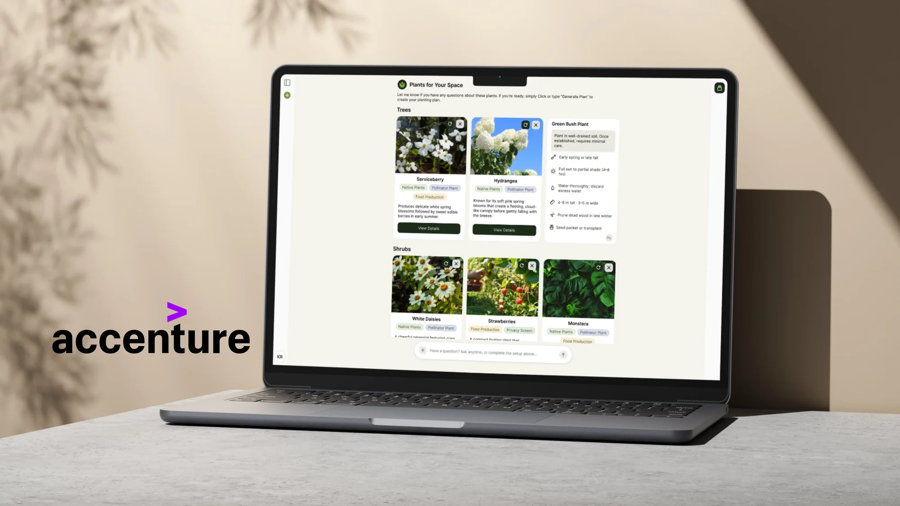
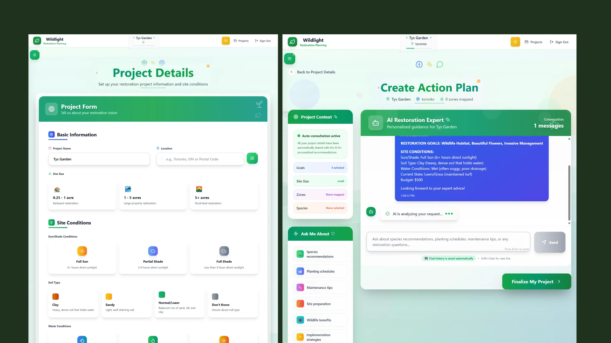
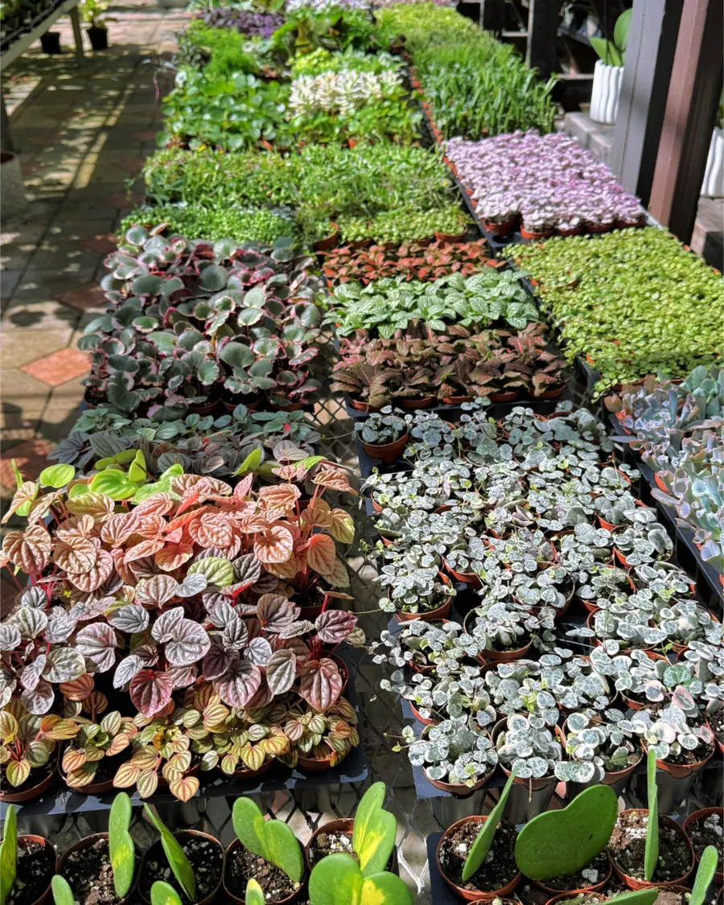
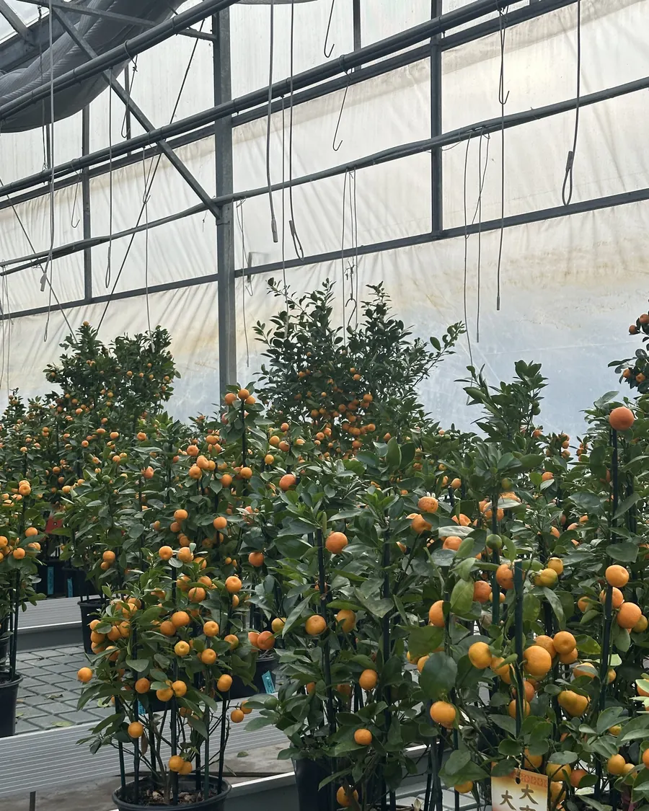
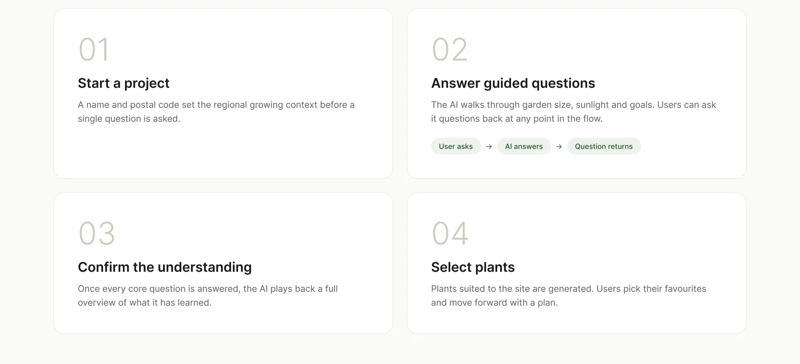
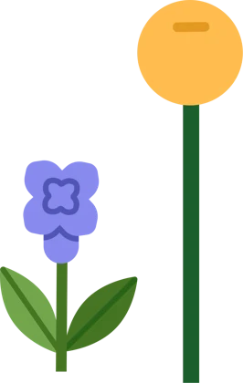
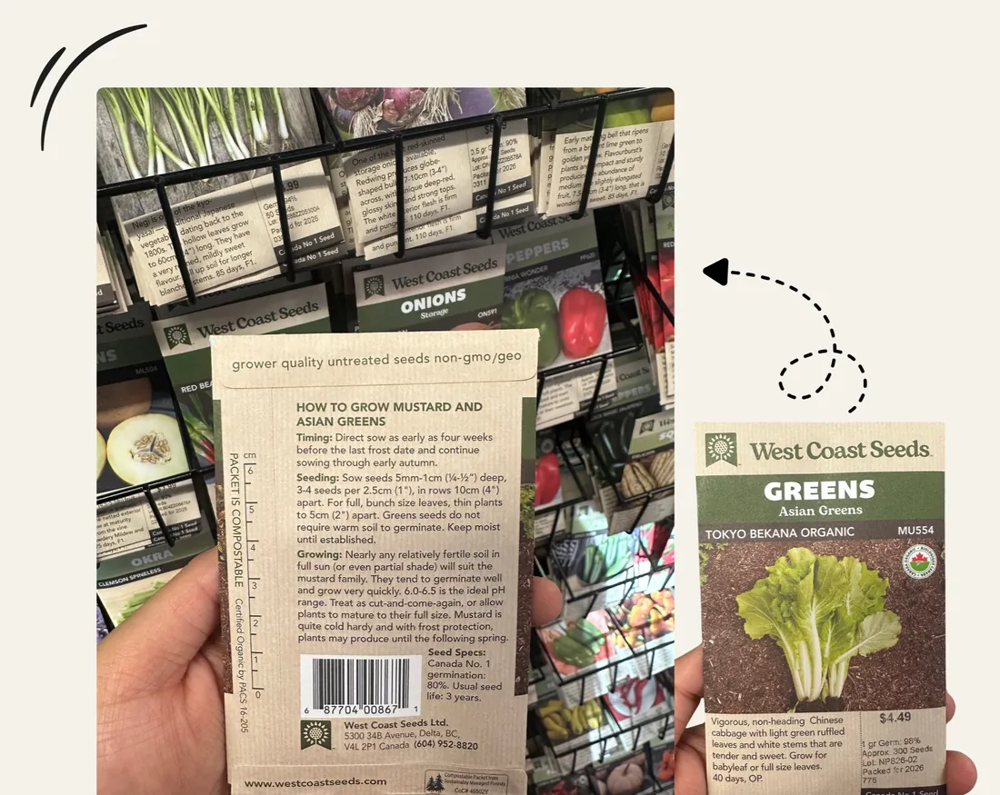
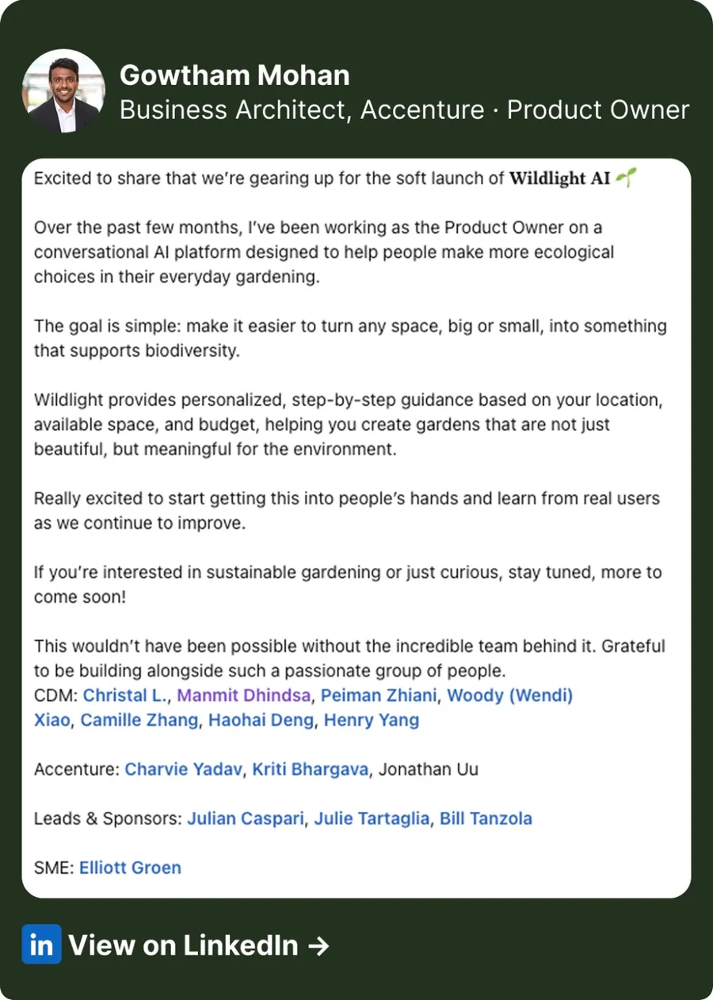
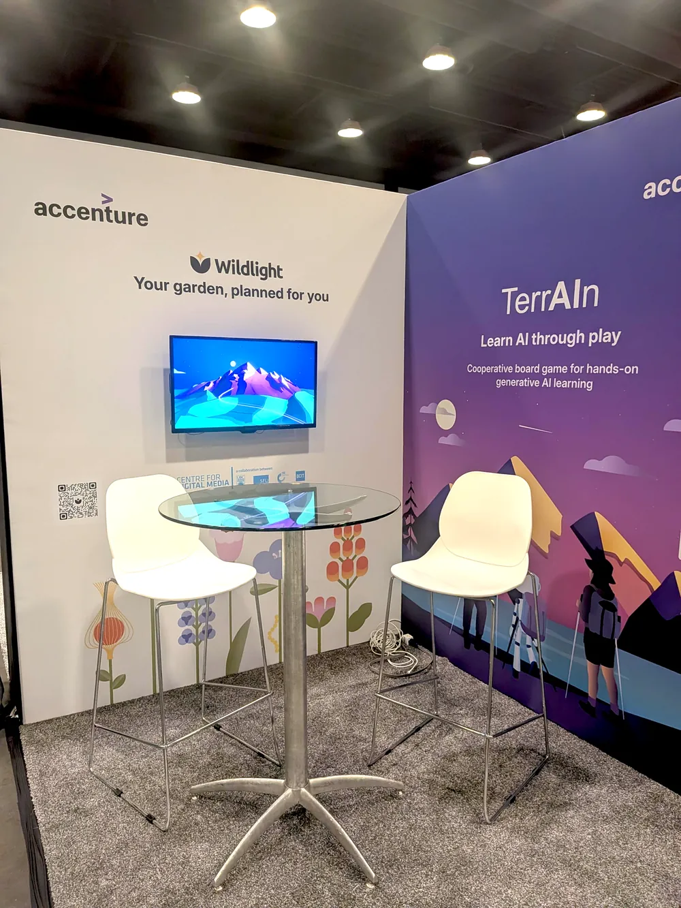
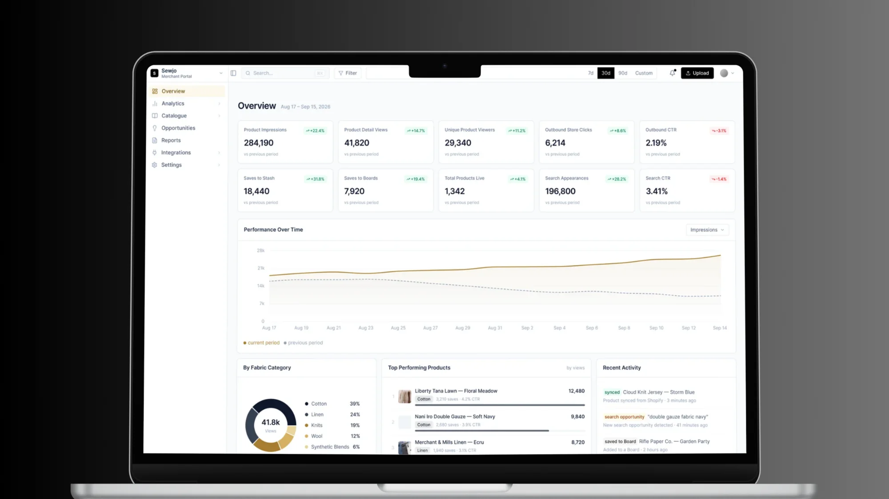

An AI sustainability product built with Accenture, showcased at Web Summit Vancouver 2026

The AI needs precise garden data.
The user doesn't have it.
As Lead Product Designer, I led the design of Wildlight's AI-powered site assessment, helping beginners plan their gardens through conversation.
My scope included the conversational assessment, map-based measuring tool, onboarding, and educational moments throughout the experience. Accenture shipped the product and continues to build on that foundation.
- Role
- Lead Product Designer
- Team
- 7-person cross-functional team
- Timeline
- January to April 2026
- Status
- Shipped
The before
Accenture's original approach

Accenture's original concept placed the AI at the end. Users completed a detailed intake form first, then spoke with the AI to generate their plan.
The form was failing before the AI ever spoke.
In testing the original flow, people stalled early. Sunlight hours, soil type, drainage. They guessed their way through, and every recommendation downstream was built on those guesses.
The redesign
An AI-first experience
The AI now guides the assessment from the first interaction, helping users understand their garden while collecting everything needed to generate personalized recommendations.
Why we committed to AI-first
The original experience assumed users already knew their garden: sunlight, soil, drainage, and site size.
But beginners open a gardening app because they don't know those answers yet. A form can't teach. A conversation can.
So we replaced it with a conversation.
One question at a time, each one shaped by the last.
Generative research
Researching real beginners
Rather than guessing what the AI should ask, we visited nurseries and greenhouses to observe how beginners chose plants, what information they looked for, and where they became confused.
We paired those observations with workshops with Accenture's subject matter expert, separating what beginners truly needed from what only experienced gardeners understand.


Translating research into structure
How the site assessment works

Each response shaped what the AI asked next. It explained unfamiliar concepts, remembered previous answers, and knew when it had enough to build the plan.
Usability testing
Testing the first build
- 20 Participants
- 22 Usability codes
- 3 Core insights
18/20
18 of 20 participants completed the core task without assistance.
We ran moderated, think-aloud sessions with 20 participants to see how they navigated the conversation.
By observing where people hesitated, got confused, or needed help, we identified the interactions that needed another look.
The flow was right.
The details weren't.
Three problems surfaced. Here's how I solved each.

Plant cards that actually tell you something
Testing made one thing clear: beautiful cards weren't enough. People still didn't have the confidence to choose a plant.
The answer was already in the nursery.
A seed packet puts the essentials on the front and the growing details on the back.
I brought that same pattern into the app: a scannable front for choosing, and a flip for everything else.

In the retest, people chose their plants without second-guessing.
Measuring without a measuring tape
The assessment needed the garden's size, but almost no one can estimate square footage by eye.
So we didn't ask for a number. We let people draw one: trace your boundary on the map, and the system calculates the area for you.
Questions should be answered, not blocked
People guessed on questions like soil type, and one wrong guess throws off everything after it.
Here, you can just ask. The AI explains, shows a visual, and teaches you enough to answer honestly.
In the retest, people stopped guessing once they understood the question.
Outcome
Shipped and showcased
The AI-first assessment shipped as the core of Wildlight. Accenture's team demoed it publicly at their Season of Impact event and at Web Summit Vancouver 2026, and it has also been pitched to major retailers, including Home Depot.
The original problem was that the AI needed garden data people didn't have. Now, the conversation helps them find it.


What this taught me
What this taught me
Research didn't just tell us what was wrong. It handed us the answer. The seed packet pattern came from watching beginners in a nursery, not from a brainstorm. It changed how I approach stuck problems: look for the version of the solution people already trust, then adapt it.

Next projectProving value without seeing the sale